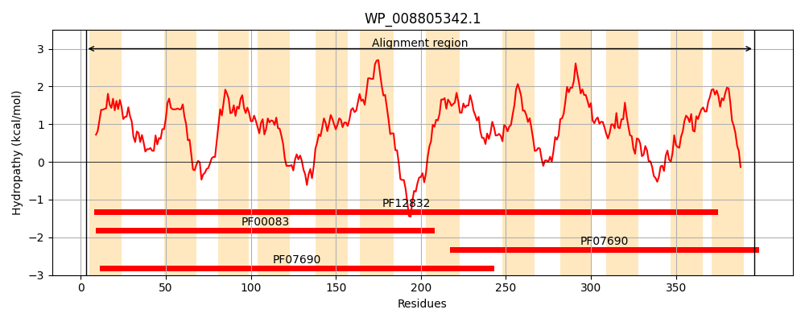
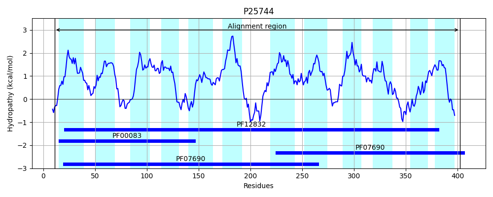
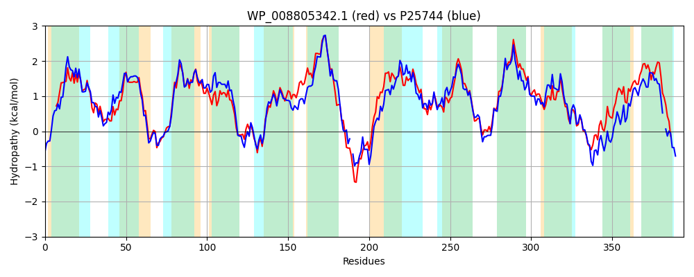

Hit Accession: P25744
Hit TCID: 2.A.1.2.20
Hit Description: gnl|BL_ORD_ID|9565 gnl|TC-DB|P25744|2.A.1.2.20 Hypothetical transport protein yceE - Escherichia coli.
Mach Len: 394
e:0.000000
Query TMS Count : 12
Hit TMS Count: 12
TMS-Overlap Score: 10.400000
Predicted Substrates:CHEBI:42503;fosfomycin, CHEBI:87211;fluoroquinolone antibiotic
BLAST Alignment:
Score: 1208 , Bit scores: 469 bits, E-value: 1.3e-165, Alignment length: 394, Percentage identity: 60
Query: 3 SWKVNLISVWFGCFFTGLAISQILPFLPLYVSQLGVTSHEALSMWSGLTFSVTFLVSAIVSPMWGSLADRKGRKLMLLRASLGMAIAILLQAFATNVWQLFILRAIMGLTSGYIPNAMALVASQVPRERSGWALSTLSTAQISGVIGGPLLGGFLADHVGLRMVFFITAILLTISFLVTLFLIKEGGRPQVSKSERLTGKQVLASLPYPGLVISLFFTTLVIQLCNGSIGPILALFIKSMAPDSNNIAFLAGMIAAVPGVSALISAPRLGKLGDRIGTSRILLATLCCAVVMFFAMSFVTTPLQLGTLRFLLGFADGAMLPAVQTLLLKYSSDSVTGRIFGYNQSFMYLGNVAGPLIGASVSAMAGFRWVFIATAIIVFINLWQLAWMLRRTRR 396
+WK NLI W GCF TG A S ++PFLPLYV QLGVT H AL+MWSG+ FS+TFL SAI SP WG LADRKGRKLMLLR++LGM I ++L A N+WQ ILRA++GL G++PNA AL+A+QVPR +SGWAL TLST +SG + GP+ GG LAD GLR VFFITA +L + F VTLF I+E +P VSK E L ++V+ SL P LV+SLF TTL+IQ+ GSI PIL L+++ +A + +N+AF++GMIA+VPGV+AL+SAPRLGKLGDRIG +IL+ L +V++ MS+V TPLQLG LRFLLG ADGA+LPAVQTLL+ SS+ + GRIF YNQSF +GNV GPL+GA++SA GFR VF+ TA +V N +W R RR
Sbjct: 11 NWKRNLIVAWLGCFLTGAAFSLVMPFLPLYVEQLGVTGHSALNMWSGIVFSITFLFSAIASPFWGGLADRKGRKLMLLRSALGMGIVMVLMGLAQNIWQFLILRALLGLLGGFVPNANALIATQVPRNKSGWALGTLSTGGVSGALLGPMAGGLLADSYGLRPVFFITASVLILCFFVTLFCIREKFQP-VSKKEMLHMREVVTSLKNPKLVLSLFVTTLIIQVATGSIAPILTLYVRELAGNVSNVAFISGMIASVPGVAALLSAPRLGKLGDRIGPEKILITALIFSVLLLIPMSYVQTPLQLGILRFLLGAADGALLPAVQTLLVYNSSNQIAGRIFSYNQSFRDIGNVTGPLMGAAISANYGFRAVFLVTAGVVLFNA-VYSWNSLRRRR 402 | Protein Hydropathy Plots: |
|---|
|  |  |
Pairwise Alignment-Hydropathy Plot:
|
|---|
|  |